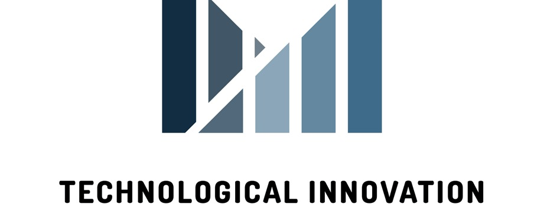

En Technological Innovation , somos pioneros en la vanguardia de la transformación digital y
la evolución empresarial. Nuestra misión es impulsar el éxito empresarial del futuro a través
de soluciones tecnológicas innovadoras y servicios de excelencia.
Nuestra marca son comercializadas alrededor del pais, ofreciendo un alto valor percibido por parte de los consumidores.
Ofrecemos un amplio espectro de servicios diseñados para empoderar a las empresas en la era digital cuales son:
1.- Desarrollo de Aplicaciones Móviles para la Administración Financiera: Creamos aplicaciones móviles de vanguardia para la administración financiera, brindando un control óptimo de los recursos financieros. Costo del Servicio... $5,000-$50,000
2.- Desarrollo de Sistemas de reservas y citas en línea: En Technological Innovation, creamos sistemas avanzados de reservas y citas en línea que simplifican la gestión de horarios y programación. Nuestras soluciones personalizadas permiten que tu empresa optimice la programación de citas y reservas, mejorando la eficiencia y la satisfacción del cliente. Costo del Servicio... $3,000-$20,000
3.- Servicios de Soporte Técnico y mantenimiento de Sistema : Nuestro equipo de expertos en soporte técnico está listo para brindar asistencia inmediata para garantizar que tus sistemas informáticos funcionen sin problemas. Ofrecemos soluciones de mantenimiento preventivo y correctivo, resolución de problemas y actualizaciones para mantener tu infraestructura tecnológica en óptimas condiciones. Costo del Servicio... $500-$2,000 Mensuales
4.- Formateo de Equipo de Cómputo: Realizamos formateo de equipos de cómputo de manera profesional y segura. Nuestros técnicos se encargan de borrar y reinstalar el sistema operativo, garantizando que tu computadora vuelva a funcionar como nueva. Costo del Servicio... $500
5.- Respaldo de Datos en Disco: Protegemos tus datos críticos mediante la implementación de soluciones de respaldo en disco confiables y automáticas. Tus archivos importantes estarán seguros y accesibles en caso de pérdida de datos. Costo del Servicio... 512gb-$500 1Tb-$1000
6.- Instalación de Sistema Operativo (Windows): Facilitamos la instalación y configuración de sistemas operativos Windows, asegurando una puesta en marcha sin problemas y ajustes óptimos para tu sistema. Costo del Servicio... $500
7.- Instalación de Office: Configuramos y personalizamos la suite de Microsoft Office para satisfacer tus necesidades comerciales. Nuestros expertos se aseguran de que todas las aplicaciones estén instaladas y funcionando correctamente. Costo del Servicio... $500
8.- Mantenimiento a los Equipos de Cómputo: Mantenemos tus equipos de cómputo en condiciones óptimas con servicios regulares de mantenimiento preventivo. Esto incluye limpieza interna y externa, actualización de software y optimización de rendimiento. Costo del Servicio... $500
9.- Cambios de Componentes (mano de obra más componente): Realizamos cambios de componentes en tu equipo de cómputo con la garantía de un servicio profesional y la posibilidad de proporcionarte componentes de alta calidad. Nuestros técnicos expertos se encargan de todo, desde la instalación hasta las pruebas de funcionamiento. Costo del Servicio... $500
10.- Servicios de Ciberseguridad para Proteger Datos Confidenciales: Nuestros servicios de ciberseguridad están diseñados para salvaguardar tus datos más valiosos y confidenciales. Implementamos estrategias de seguridad de vanguardia, protegiendo tu empresa contra amenazas cibernéticas, hackers y ataques maliciosos. Costo del Servicio... $5,000-$20,000
11.- Instalación de Antivirus (Depende del Antivirus): Ofrecemos servicios de instalación y configuración de software antivirus líder en la industria. Adaptamos la elección del antivirus a tus necesidades específicas, garantizando una protección efectiva contra virus, malware y otras amenazas. Costo del Servicio... $200-$1000
12.- Desarrollo de Plataformas Web para la Promoción de Empresas: Creamos plataformas web a medida que impulsan la visibilidad y promoción de tu empresa en línea. Nuestras soluciones web son altamente personalizadas, diseñadas para destacar tu marca y atraer a tu audiencia objetivo. Costo del Servicio... $500-$10,000
13.- Implementación de Chatbots para Mejorar la Atención al Cliente: Optimiza la atención al cliente con chatbots inteligentes desarrollados por nosotros. Estos chatbots ofrecen respuestas rápidas y precisas a las preguntas de los clientes, mejorando la satisfacción y la eficiencia en la comunicación. Costo del Servicio... $500-$10,000
14.- Creación de Plataformas E-commerce para Empresas de Crecimiento: Diseñamos y desarrollamos plataformas de comercio electrónico que impulsan el crecimiento de tu empresa. Nuestras soluciones e-commerce permiten la venta en línea de tus productos o servicios de manera efectiva y segura. Costo del Servicio... $500-$20,000
15.- Servicios de Análisis y Mejora de la Experiencia del Cliente: Analizamos y mejoramos la experiencia del cliente de tu empresa. Utilizamos datos y métricas para identificar áreas de mejora y optimizar los procesos para una experiencia más satisfactoria y rentable. Costo del Servicio... $500-$5,000
16.- Desarrollo de Aplicaciones para la Administración de Proyectos: Creamos aplicaciones personalizadas que simplifican la administración de proyectos. Estas herramientas ayudan a tu empresa a gestionar proyectos de manera eficiente, desde la planificación hasta la ejecución y seguimiento. Costo del Servicio... $5,000-$100,000
17.- Servicios de Monitoreo y Mantenimiento Proactivo de Sistemas: Garantizamos un rendimiento continuo y seguro de tus sistemas informáticos a través de servicios de monitoreo y mantenimiento proactivo. Detectamos y abordamos problemas antes de que afecten a tu negocio. Costo del Servicio... $500-$2,500 Mensuales
18.- Auditorías de Seguridad Tecnológica y Ciberseguridad: Realizamos auditorías exhaustivas de seguridad tecnológica y ciberseguridad para identificar vulnerabilidades y riesgos en tu infraestructura. Nuestras recomendaciones fortalecerán la seguridad de tu empresa. Costo del Servicio... $1,000-$20,000
19.- Servicios de Respuesta a Incidentes de Seguridad Informática: En caso de incidentes de seguridad informática, nuestro equipo reacciona de manera inmediata para contener la amenaza, minimizar el impacto y restaurar la integridad de tus sistemas y datos. Costo del Servicio... $1,000-$20,000
20.- Servicios de Recuperación de Datos y Respaldo en la nube: En Technological Innovation, ofrecemos servicios de recuperación de datos expertos para ayudarte a recuperar información crítica perdida. Además, proporcionamos soluciones de respaldo en la nube para garantizar la seguridad y accesibilidad de tus datos en todo momento. Costo del Servicio... $200-$5,000
21.- Soluciones de Facturación: Nuestras soluciones de facturación te permiten simplificar y automatizar el proceso de facturación de tu empresa. Ofrecemos herramientas personalizadas que agilizan la generación y gestión de facturas, optimizando tus operaciones financieras. Costo del Servicio... $150-$2,500
22.- Tarjeta Madre (Depende de la Marca y Características): Ofrecemos una amplia selección de tarjetas madre de diversas marcas y características. Nuestros expertos te asesorarán para elegir la tarjeta madre que mejor se adapte a tus necesidades específicas, garantizando un rendimiento confiable y duradero. Costo del Servicio... $1,500-$5,000
23.- Disco Sólido (Depende de la Marca y Características): Suministramos discos sólidos de alta calidad de diferentes marcas y capacidades. Te ayudaremos a seleccionar el disco sólido adecuado para mejorar la velocidad y el rendimiento de tu equipo. Costo del Servicio... $1,000-$5,000
24.- Disco Mecánico (Depende de la Marca y Características): Proporcionamos discos mecánicos de diferentes marcas y tamaños para satisfacer tus necesidades de almacenamiento. Nuestros productos ofrecen soluciones fiables para el almacenamiento de datos. Costo del Servicio... $1,000-$5,000
25.- Tarjeta Gráfica: Te ofrecemos tarjetas gráficas de última generación que mejoran la calidad visual y el rendimiento de tu computadora. Nuestros productos están diseñados para satisfacer las demandas de aplicaciones gráficas exigentes. Costo del Servicio... $2,000-$20,000
26.- Memoria RAM 2GB: Disponemos de una variedad de opciones de memoria RAM para mejorar el rendimiento de tu equipo. Desde capacidades básicas hasta soluciones de alto rendimiento, podemos ayudarte a elegir la memoria RAM adecuada para tus necesidades específicas. Costo del Servicio... $200-$500
27.- Memoria RAM 4GB: Disponemos de una variedad de opciones de memoria RAM para mejorar el rendimiento de tu equipo. Desde capacidades básicas hasta soluciones de alto rendimiento, podemos ayudarte a elegir la memoria RAM adecuada para tus necesidades específicas. Costo del Servicio... $300-$600
28.- Memoria RAM 8GB: Disponemos de una variedad de opciones de memoria RAM para mejorar el rendimiento de tu equipo. Desde capacidades básicas hasta soluciones de alto rendimiento, podemos ayudarte a elegir la memoria RAM adecuada para tus necesidades específicas. Costo del Servicio... $400-$600
29.- Memoria RAM 18GB: Disponemos de una variedad de opciones de memoria RAM para mejorar el rendimiento de tu equipo. Desde capacidades básicas hasta soluciones de alto rendimiento, podemos ayudarte a elegir la memoria RAM adecuada para tus necesidades específicas. Costo del Servicio... $1,000-$2,000
30.- Memoria RAM 64GB: Disponemos de una variedad de opciones de memoria RAM para mejorar el rendimiento de tu equipo. Desde capacidades básicas hasta soluciones de alto rendimiento, podemos ayudarte a elegir la memoria RAM adecuada para tus necesidades específicas. Costo del Servicio... $2,500-$4,000
Puedes ponerte en contacto con nosotros a través de los siguientes medios: